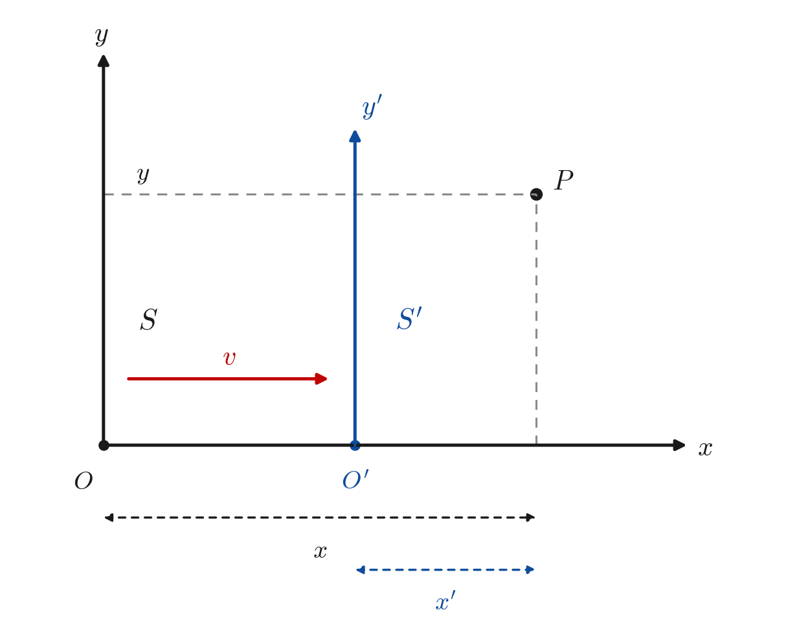

2 伽利略变换与洛伦兹变换的推导
相对论, 麦克斯韦方程组, 洛伦兹变换, 协变性, 电磁场张量
2.1 公理设定
本章的全部结果都从三条前提推出：坐标变换的线性性、一个“不变对象”的存在，以及变换集合的群结构。前两条与群结构为两种变换所共有；真正决定结论的，是“不变对象”取什么——它把推导分成两支，一支给出伽利略变换，一支给出洛伦兹变换。
公共公理
公理 2.1 (均匀性假设（线性变换）) 空间是均匀的，时间是均匀的。因此，两个惯性系 S 和 S' 之间的坐标变换必须是线性变换（齐次线性变换加平移，这里取原点重合的齐次部分）。
公理 2.2 (协变性（群结构）) 所有的空间方向是对称的（各向同性），且变换构成的集合必须形成“群”：即连续做两次变换等于做一次变换，且存在逆变换回到原坐标系。
第三条公理：不变对象（二选一）
公理 2.3 (存在不变时间（绝对同时性）) 存在一个在所有惯性系中取值相同的时间刻度，即同时性与参考系无关，等时面在变换下不变。形式地：若 t = 0，则在 S' 中必有 t' = 0。
公理 2.4 (存在不变速度) 存在一个恒定的特征速度 c，在任何参考系中，沿任意方向测量该速度都恒为 c。形式地：若 x = ct，则在 S' 中必有 x' = ct'；若 x = -ct，则 x' = -ct'。
两条第三公理互为对偶：一条把时间轴定为不变量，另一条把速度轴定为不变量。
2.2 建立一般线性变换形式
设 S' 系相对于 S 系以速度 v 沿 x 轴正向运动，两系对应的坐标轴两两平行，且在 t = t' = 0 时原点重合。两系的几何关系如图 图 2.1 所示。

本节的坐标列向量统一按 (t, x) 排列：时间分量在前、空间分量在后，与 小节 2.7 的四维顺序 (t, x, y, z) 完全一致。由 公理 2.1，(t, x) 平面内的线性变换必为
\begin{pmatrix} t' \\ x' \end{pmatrix} = \begin{pmatrix} A & B \\ C & D \end{pmatrix} \begin{pmatrix} t \\ x \end{pmatrix} \tag{2.1}
即
t' = A t + B x \tag{2.2}
x' = C t + D x \tag{2.3}
其中 A, B, C, D 是只依赖于 v 与 c 的待定常数。
接下来的推导是四步消参：线性性留下四个待定常数，下面四条约束各消去一个。前两条约束只用到“S' 以速度 v 相对 S 运动”这一几何设定，与第三条公理无关，因此两种变换共享；分歧只出现在后两条。
| 步骤 | 依据 | 伽利略 | 洛伦兹 |
|---|---|---|---|
| 约束 1 | S' 的原点 | C = -Dv | C = -Dv |
| 约束 2 | 相对速度 | D = A | D = A |
| 约束 3 | 不变对象 | B = 0 | B = -Av/c^{2} |
| 约束 4 | 群结构 | A = 1 | A = \gamma |
2.3 公共约束
2.3.1 约束 1：追踪 S' 的原点
S' 的原点满足 x' = 0，它在 S 系中对应 x = vt。代入 x' = Ct + Dx：
0 = C t + D(vt) = (C + Dv)\,t \quad \Longrightarrow \quad C = -Dv \tag{2.4}
于是 式 2.1 收缩为
\begin{aligned} t' &= A t + B x \\ x' &= D(x - vt) \end{aligned} \tag{2.5}
2.3.2 约束 2：相对速度
由相对性原理（公理 2.2），S 系在自己看来静止，而在 S' 系中必须以速度 -v 退行，即其原点 x = 0 满足 x' = -v t'。
在 式 2.5 中令 x = 0，得 t' = A t、x' = -Dv\,t，于是 x'/t' = -Dv/A。要求它等于 -v（v \neq 0；v = 0 时变换退化为恒等，A = D = 1 自动成立）：
-\frac{Dv}{A} = -v \quad \Longrightarrow \quad D = A \tag{2.6}
至此两种变换共有一个形式，只剩 A、B 两个参数：
\Lambda = \begin{pmatrix} A & B \\ -Av & A \end{pmatrix} \tag{2.7}
分岔点就在 B 与 A 上：B 由第三条公理定，A 由群结构配合它定。
2.4 伽利略变换
2.4.1 约束 3G：不变时间
由 公理 2.3，t = 0 \Rightarrow t' = 0。在 式 2.2 中令 t = 0，得 t' = Bx；要求它对一切 x 为零，故
B = 0 \tag{2.8}
于是变换进一步收缩为 t' = A t、x' = A(x - vt)——这是一个保时的变换。
2.4.2 约束 4G：群结构
由 公理 2.2，变换集合构成群，故速度为 v 的变换与速度为 -v 的变换互逆：\Lambda(v)\,\Lambda(-v) = I。
把 v \to -v 代入 式 2.7（此时 B = 0）；由各向同性，A 只依赖速率大小而与此方向无关，故 A(-v) = A(v) \equiv A：
\Lambda(-v) = \begin{pmatrix} A & 0 \\ Av & A \end{pmatrix}
两者相乘，非对角元两两相消，对角元给出 A^{2}：
\Lambda(v)\,\Lambda(-v) = \begin{pmatrix} A & 0 \\ -Av & A \end{pmatrix} \begin{pmatrix} A & 0 \\ Av & A \end{pmatrix} = A^{2} I \tag{2.9}
要求乘积为单位阵，得 A^{2} = 1。再由 v \to 0 时变换必须连续地退化为恒等变换（A \to 1），取正根：
A = 1 \tag{2.10}
2.4.3 结果
将 A = 1、B = 0 代回 式 2.1：
t' = t \tag{2.11}
x' = x - vt \tag{2.12}
写成矩阵形式
\begin{pmatrix} t' \\ x' \end{pmatrix} = \begin{pmatrix} 1 & 0 \\ -v & 1 \end{pmatrix} \begin{pmatrix} t \\ x \end{pmatrix} \tag{2.13}
这就是伽利略变换：时间绝对（t' = t），空间坐标按 x' = x - vt 随参考系平移。
一致性检验。 两次同向伽利略变换应当等于一次合成变换，\Lambda(v_{1})\,\Lambda(v_{2}) = \Lambda(v_{1} + v_{2})。直接相乘：
\begin{pmatrix} 1 & 0 \\ -v_{1} & 1 \end{pmatrix} \begin{pmatrix} 1 & 0 \\ -v_{2} & 1 \end{pmatrix} = \begin{pmatrix} 1 & 0 \\ -(v_{1} + v_{2}) & 1 \end{pmatrix}
速度按算术相加，群结构闭合。
2.5 洛伦兹变换
2.5.1 约束 3L：不变速度
由 公理 2.4，要求 x = ct \Rightarrow x' = ct'。取满足 x = ct 的事件；由 式 2.6 有 D = A，故 式 2.5 给出 x' = A(x - vt)。用它和 式 2.2 构造组合 x' - ct'：
x' - c t' = A(ct - vt) - c\,(At + Bct) = -\left(Av + Bc^{2}\right)t
要求该组合恒为零，即得
Av + Bc^{2} = 0 \quad \Longrightarrow \quad B = -\frac{Av}{c^{2}} \tag{2.14}
对满足 x = -ct 的事件，同样构造 x' + ct'，得到的是同一个约束 Av + Bc^{2} = 0，不产生新的限制。
2.5.2 约束 4L：群结构
与伽利略一支同样的理由（公理 2.2）：\Lambda(v)\,\Lambda(-v) = I。由各向同性，A(-v) = A(v) \equiv A，故
\Lambda(v) = \begin{pmatrix} A & -Av/c^{2} \\ -Av & A \end{pmatrix}, \qquad \Lambda(-v) = \begin{pmatrix} A & Av/c^{2} \\ Av & A \end{pmatrix}
两者相乘，非对角元两两相消，对角元给出 A^{2}\left(1 - v^{2}/c^{2}\right)：
\begin{aligned} \Lambda(v) \Lambda(-v) &= \begin{pmatrix} A & -Av/c^2 \\ -Av & A \end{pmatrix} \begin{pmatrix} A & Av/c^2 \\ Av & A \end{pmatrix} \\ &= \begin{pmatrix} A^2 \left(1 - \frac{v^2}{c^2}\right) & 0 \\ 0 & A^2 \left(1 - \frac{v^2}{c^2}\right) \end{pmatrix} \\ &= A^2 \left(1 - \frac{v^2}{c^2}\right) I \end{aligned} \tag{2.15}
要求乘积为单位阵，得
A^{2}\left(1 - \frac{v^{2}}{c^{2}}\right) = 1 \quad \Longrightarrow \quad A = \frac{1}{\sqrt{1 - v^{2}/c^{2}}} \equiv \gamma \tag{2.16}
根号取正号：v \to 0 时变换必须连续地退化为恒等变换，A \to 1。
2.5.3 结果
t' = \gamma\left( t - \frac{v}{c^{2}}x \right) \tag{2.17}
x' = \gamma(x - vt) \tag{2.18}
写成矩阵形式 式 2.19：
\begin{pmatrix} t' \\ x' \end{pmatrix} = \begin{pmatrix} \gamma & -\gamma v/c^{2} \\ -\gamma v & \gamma \end{pmatrix} \begin{pmatrix} t \\ x \end{pmatrix} \tag{2.19}
一致性检验。 两次同向洛伦兹变换同样应当等于一次合成变换。直接相乘得
\begin{aligned} \Lambda(v_1)\Lambda(v_2) &= \begin{pmatrix} \gamma_1 & -\gamma_1 v_1/c^2 \\ -\gamma_1 v_1 & \gamma_1 \end{pmatrix} \begin{pmatrix} \gamma_2 & -\gamma_2 v_2/c^2 \\ -\gamma_2 v_2 & \gamma_2 \end{pmatrix} \\ &= \begin{pmatrix} \gamma_1\gamma_2 \left(1 + \frac{v_1v_2}{c^2}\right) & -\frac{\gamma_1\gamma_2}{c^2}(v_1 + v_2) \\ -\gamma_1\gamma_2(v_1 + v_2) & \gamma_1\gamma_2 \left(1 + \frac{v_1v_2}{c^2}\right) \end{pmatrix} \\ &= \gamma_1\gamma_2 \left(1 + \frac{v_1v_2}{c^2}\right) \begin{pmatrix} 1 & -\frac{v_1+v_2}{c^2(1 + v_1v_2/c^2)} \\ -\frac{v_1+v_2}{1 + v_1v_2/c^2} & 1 \end{pmatrix} \end{aligned}
根据速度合成定理，令 (V) 为：
V = \frac{v_1 + v_2}{1 + v_1v_2/c^2}
最终将 (V) 代入上式，得到结果：
\Lambda(v_1)\Lambda(v_2) = \gamma_1\gamma_2 \left(1 + \frac{v_1v_2}{c^2}\right) \begin{pmatrix} 1 & -V/c^2 \\ -V & 1 \end{pmatrix}
而 \gamma_{1}\gamma_{2}\left(1 + v_{1}v_{2}/c^{2}\right) = \gamma(V)：
\begin{aligned} \gamma(V) &= \frac{1}{\sqrt{1 - V^2/c^2}} \\ &= \frac{1}{\sqrt{1 - \frac{1}{c^2} \left( \frac{v_1 + v_2}{1 + v_1v_2/c^2} \right)^2}} \\ &= \frac{1}{\sqrt{\frac{c^2(1 + v_1v_2/c^2)^2 - (v_1 + v_2)^2}{c^2(1 + v_1v_2/c^2)^2}}} \end{aligned}
将分子部分展开，进行代数化简：
\begin{aligned} &c^2(1 + v_1v_2/c^2)^2 - (v_1 + v_2)^2 \\ &= c^2 \left( 1 + 2\frac{v_1v_2}{c^2} + \frac{v_1^2v_2^2}{c^4} \right) - (v_1^2 + 2v_1v_2 + v_2^2) \\ &= \left( c^2 + 2v_1v_2 + \frac{v_1^2v_2^2}{c^2} \right) - v_1^2 - 2v_1v_2 - v_2^2 \\ &= c^2 - v_1^2 - v_2^2 + \frac{v_1^2v_2^2}{c^2} \\ &= c^2 \left( 1 - \frac{v_1^2}{c^2} - \frac{v_2^2}{c^2} + \frac{v_1^2v_2^2}{c^4} \right) \\ &= c^2 \left( 1 - \frac{v_1^2}{c^2} \right) \left( 1 - \frac{v_2^2}{c^2} \right) \end{aligned}
\begin{aligned} \gamma(V) &= \frac{1}{\sqrt{\frac{c^2 \left( 1 - \frac{v_1^2}{c^2} \right) \left( 1 - \frac{v_2^2}{c^2} \right)}{c^2(1 + v_1v_2/c^2)^2}}} \\ &= \frac{1 + v_1v_2/c^2}{\sqrt{1 - v_1^2/c^2} \cdot \sqrt{1 - v_2^2/c^2}} \\ &= \gamma_1 \gamma_2 \left( 1 + \frac{v_1v_2}{c^2} \right) \end{aligned}
故乘积恰为 \Lambda(V)：速度按相对论加法合成，群结构同样闭合，只是合成律不再是算术相加。
2.6 两种变换的关系
1. 逐项对照
| 伽利略（式 2.11、式 2.12） | 洛伦兹（式 2.17、式 2.18） | |
|---|---|---|
| 时间 | t' = t | t' = \gamma\left(t - vx/c^{2}\right) |
| 空间 | x' = x - vt | x' = \gamma(x - vt) |
| 矩阵 | \begin{pmatrix} 1 & 0 \\ -v & 1 \end{pmatrix} | \begin{pmatrix} \gamma & -\gamma v/c^{2} \\ -\gamma v & \gamma \end{pmatrix} |
| 不变量 | \Delta t（绝对时间） | c^{2}\Delta t^{2} - \Delta x^{2}（时空间隔） |
| 速度合成 | 算术相加 v_{1} + v_{2} | 相对论加法 |
2. c \to \infty 的极限
把洛伦兹变换中的 c 取无穷：\gamma \to 1，\gamma v/c^{2} \to 0，式 2.17 与 式 2.18 逐项退化为 式 2.11 与 式 2.12。也就是说，
伽利略变换是洛伦兹变换在 c \to \infty 下的极限。
这与两条第三公理的对偶性一致：c 取有限值对应“存在不变速度”，c 取无穷则意味着不存在有限的不变速度——那正是 公理 2.3 所陈述的内容。所以两条公理并非两个互不相干的前提，而是同一条陈述在有限与无限两处的取值。
3. 群结构
两支各自闭合（合成律见各自的一致性检验）。在群论上，伽利略群是洛伦兹群在 c \to \infty 下的 Inönü–Wigner 收缩；单就群本身而言，洛伦兹群是“更大”的那一个，伽利略群是它在收缩极限下的退化结果。
2.7 推广到四维时空
前面的推导在 (t, x) 平面内完成，对两种变换同样适用。本节补齐四维图景：先由对称性证明横向坐标 y、z 在变换下不变，再分别给出四维形式的伽利略变换与洛伦兹变换。
2.7.1 横向坐标不变：对称性论证
设两系坐标轴对应平行。y、z 坐标的一般线性变换可写为 式 2.20（系数只依赖于 v 与 c）：
\begin{aligned} y' &= p\,y + q\,z + \alpha x + \eta t \\ z' &= r\,y + s\,z + \mu x + \nu t \end{aligned} \tag{2.20}
第一步（x 轴映到 x' 轴）。 由各向同性，x 轴在变换下必须映到 x' 轴：位于 x 轴上的点（y = z = 0）在 S' 系中的横向坐标必须为零。于是对任意 x、t 有 \alpha x + \eta t = 0 与 \mu x + \nu t = 0，故
\alpha = \eta = \mu = \nu = 0
第二步（反射对称性）。 将两系的 y 轴同时反向（y \to -y，y' \to -y'），物理情境不变，变换形式应保持不变。在反射后的坐标下 -y' = -py + qz，即 y' = py - qz，与原式 y' = py + qz 比较得 q = 0；同理，由 z \to -z 的反射对称性得 r = 0。于是
y' = p\,y, \qquad z' = s\,z
第三步（确定横向比例因子）。 由 y、z 两个横向方向的等价性，p = s，记为 a(v)。
- 一方面，对上式求逆（即把 v 换成 -v 的变换）得 y = a(-v)\,y'，故
a(v)\,a(-v) = 1
- 另一方面，考虑两个由相对性原理（公理 2.2）联系起来的实验：S' 系测量静止于 S 系的横向标尺，由于 y' 只依赖于 y（与同时性无关），测得长度为原来的 a(v) 倍；S 系测量静止于 S' 系的同一根标尺，测得长度为原来的 a(-v) 倍。两个实验的物理地位完全对等（交换两系即可互换），比例因子必须相同，故 a(v) = a(-v)。
于是 a(v)^{2} = 1；再由 v \to 0 时变换连续地退化为恒等变换（a \to 1），得
y' = y, \qquad z' = z \tag{2.21}
即横向坐标在变换下不变——这一论证既不涉及 B 也不涉及 A，因此对伽利略与洛伦兹两种变换同时成立。于是四维变换在 (t, x) 与 (y, z) 子空间上是分块对角的，前几节在 (t, x) 平面内的推导对四维变换完全充分。
2.7.2 四维伽利略变换
综合 式 2.11、式 2.12 与 式 2.21，得到四维伽利略变换（变量按 (t, x, y, z) 的顺序排列）：
\left\{\begin{aligned} & t' = t \\ & x' = x - vt \\ & y' = y \\ & z' = z \end{aligned} \right. \tag{2.22}
其矩阵形式为
\begin{pmatrix} t' \\ x' \\ y' \\ z' \end{pmatrix} = \begin{pmatrix} 1 & 0 & 0 & 0 \\ -v & 1 & 0 & 0 \\ 0 & 0 & 1 & 0 \\ 0 & 0 & 0 & 1 \end{pmatrix} \begin{pmatrix} t \\ x \\ y \\ z \end{pmatrix} \tag{2.23}
2.7.3 四维洛伦兹变换
综合 式 2.17、式 2.18 与 式 2.21，得到四维洛伦兹变换：
\left\{\begin{aligned} & t' = \gamma\left(t - \frac{v}{c^{2}}x \right) \\ & x' = \gamma(x - vt) \\ & y' = y \\ & z' = z \end{aligned} \right. \tag{2.24}
其矩阵形式为 式 2.25。
\begin{pmatrix} t' \\ x' \\ y' \\ z' \end{pmatrix} = \begin{pmatrix} \gamma & -\gamma v/c^{2} & 0 & 0 \\ -\gamma v & \gamma & 0 & 0 \\ 0 & 0 & 1 & 0 \\ 0 & 0 & 0 & 1 \end{pmatrix} \begin{pmatrix} t \\ x \\ y \\ z \end{pmatrix} \tag{2.25}
取 x^{0} = ct 并记 \beta = v/c，四个分量具有相同的长度量纲，式 2.19 的 2 \times 2 块化为对称形式 式 2.26。
\begin{pmatrix} ct' \\ x' \\ y' \\ z' \end{pmatrix} = \begin{pmatrix} \gamma & -\gamma\beta & 0 & 0 \\ -\gamma\beta & \gamma & 0 & 0 \\ 0 & 0 & 1 & 0 \\ 0 & 0 & 0 & 1 \end{pmatrix} \begin{pmatrix} ct \\ x \\ y \\ z \end{pmatrix} \tag{2.26}
2.7.4 时空间隔不变性
定义两事件之间的时空间隔（以下取原点重合的事件，即 \Delta t = t、\Delta x = x 等）
s^{2} = c^{2}\Delta t^{2} - \Delta x^{2} - \Delta y^{2} - \Delta z^{2} \tag{2.27}
由 式 2.26 读出 ct' = \gamma(ct - \beta x)、x' = \gamma(x - \beta ct)，以及 y' = y、z' = z。直接计算
\begin{aligned} c^{2}t'^{2} - x'^{2} &= \gamma^{2}\left[(ct - \beta x)^{2} - (x - \beta ct)^{2}\right] \\ &= \gamma^{2}(c^{2}t^{2} + \beta^{2}x^{2} - x^{2} - \beta^{2}c^{2}t^{2}) \\ &= \gamma^{2}\left((1 - \beta^{2})c^{2}t^{2} - (1 - \beta^{2}) x^{2}\right)\\ &= \gamma^{2}\left(1 - \beta^{2}\right)\left(c^{2}t^{2} - x^{2}\right) \\ &= c^{2}t^{2} - x^{2} \end{aligned} \tag{2.28}
第步用了 \gamma^{2}\left(1 - \beta^{2}\right) = 1（式 2.16）。横向分量不参与运算（y' = y、z' = z），故 式 2.27 整体不变：
c^{2}t'^{2} - x'^{2} - y'^{2} - z'^{2} = c^{2}t^{2} - x^{2} - y^{2} - z^{2} \tag{2.29}
2.8 讨论
本章的两种变换出自同一套推导。线性性给出 A, B, C, D 四个待定常数；S' 的原点与相对速度各消去一个（公共约束）；第三条公理消去 B；群结构定下 A。两支的差别全部集中在第三条公理：
- 取“存在不变时间”：B = 0、A = 1，得伽利略变换；
- 取“存在不变速度 c”：B = -Av/c^{2}、A = \gamma，得洛伦兹变换。
而前者恰是后者在 c \to \infty 下的极限。因此这两种变换不是两个彼此独立的结论，而是同一族变换在不同公理取值下的两个端点。
整个推导只使用了三条公理——线性性、不变对象的存在与群结构——而未借助电磁学或光的任何具体性质；“不变速度”在此只是一条关于变换形式的约束，与任何具体物理对象无关。